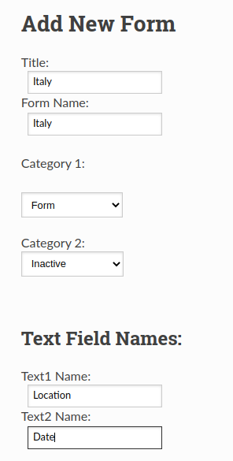
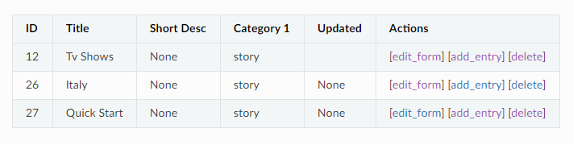
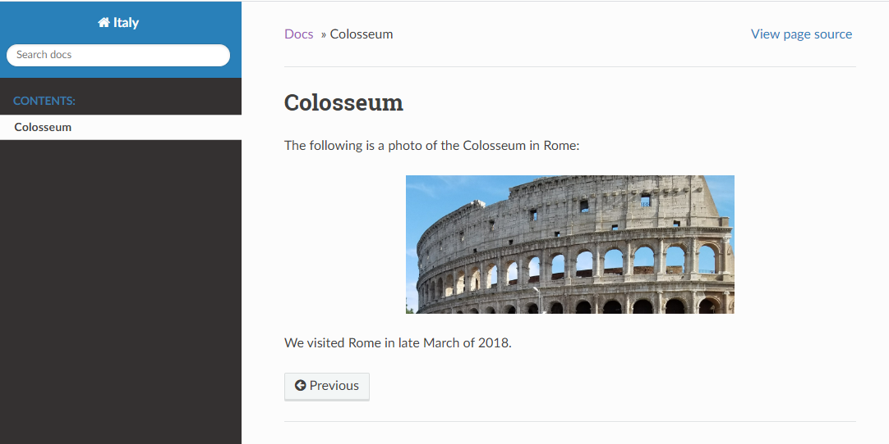

Quick Start Instructions
Install Application
To install application:
Download zip file (Code > Download Zip).
Unzip file into a folder.
Running Application
To run the Flask CMS application:
Change directory to the folder where you installed the application.
Run the following command in a command window:
python flask_cms.py
Creating New Form
Here are quick instructions for creating a Form in the Flask CMS:
Select Form > Enter New Form.
Fill in form information: Title, Form Name, Categories, etc.
The information that you add will be used a titles for the form input fields.
Click submit.
This step will create a directory and the record to the database. It also creates an ‘images’ directory.
result : Created directory: static/italy. Record successfully added. Run 'sphinx-quickstart' on new directory.
{kind=link}
Running sphinx-quickstart
To run sphinx-quickstart:
Change directory to the directory created above.
cd /home/user_name/python_proj1/static/italy
Run ‘sphinx-quickstart’
sphinx-quickstart
Respond to the prompts. You can use default selections. This will create a conf.py, index.rst, and other files and directories.
(Optional) Open conf.py in your editor and change the html_theme from ‘alabaster’ to ‘sphinx_rtd_theme’.
html_theme = 'sphinx_rtd_theme'
Note: You may need to install sphinx_rtd_theme (pip install sphinx_rtd_theme).
Copying Images to images Directory
Copy images to images directory (e.g., /home/username/static/italy/images).
Adding Form to Category List
Add the following text to the cat1.csv file:
form,Form
topicmap,Topicmap
bookmap,Bookmap
images,Images
althete,Favorite Athletes
movies,Favorite Movies
recent_movies,Recently Viewed Movies
baseball,Favorite Baseball Players
tv_shows,TV Shows
quickstart,Quick Start
italy, Italy
Creating Topics
To create a topic for your form:
Select Forms > Display Forms.
Click on [add_entry].
Fill in the form. For this example, we will use ‘Colosseum’ as the file
For the Contents field, enter restructured text. For example:
************* Colosseum ************* The following is a photo of the Colosseum in Rome: .. image:: images/italy1.jpg :width: 400px :align: center :alt: Colosseum in Rome We visited Rome in late March of 2018.
This will create a Colosseum.rst file in the ‘static/italy’ folder.
Follow steps 1 - 3. Use index as the file name when creating topic.
Edit index.rst file to include the Colosseum file:
.. Italy documentation master file, created by sphinx-quickstart on Thu Apr 9 14:59:34 2020. You can adapt this file completely to your liking, but it should at least contain the root `toctree` directive. Welcome to Italy's documentation! ================================= .. toctree:: :maxdepth: 2 :caption: Contents: Colosseum Indices and tables ================== * :ref:`genindex` * :ref:`modindex` * :ref:`search`
{kind=link}
Build Html Files
Run the following command to build the html files:
make build
This creates the html files in the C:Users<user_name>newprojstaticitaly_buildhtml directory.
Open Colosseum.html. You should see something like the following:

{kind=link}